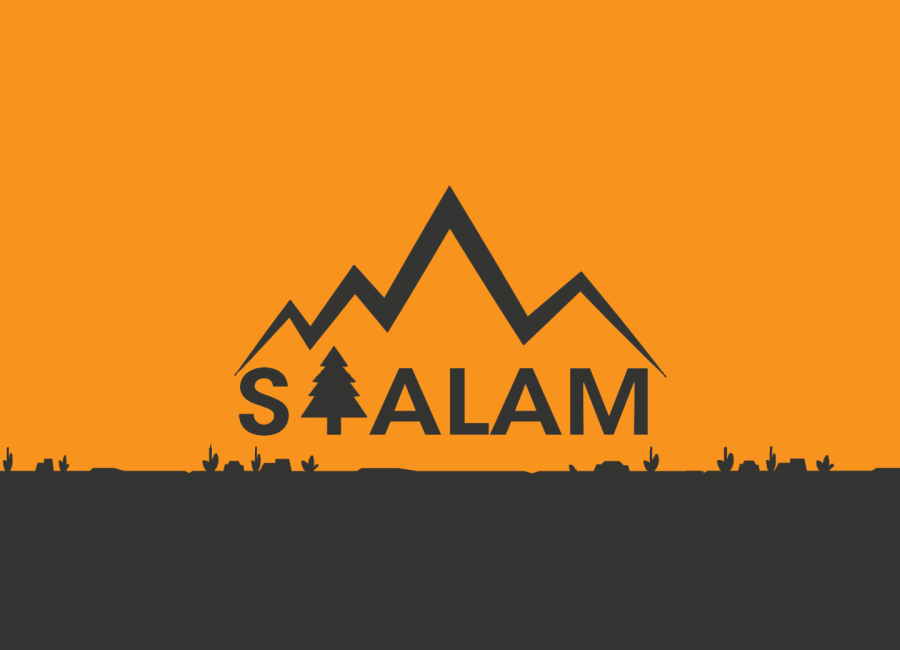
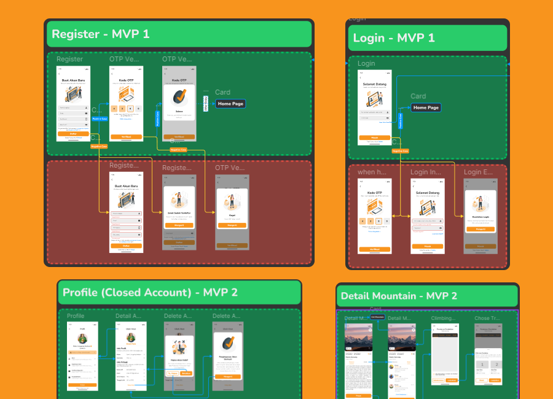

[ PROJECT_FILE: SIALAM ]
CLIENT: PT. BHINNEKA ALAM NUSANTARA | ROLE: UI/UX DESIGNER
STATUS: MISSION ACCOMPLISHED

> DATA_OVERVIEW
>> SUBJECT: Riwayat Pekerjaan di PT Bhineka Alam Nusantara pada produk SIALAM.
>> OBJECTIVE: Merancang aplikasi untuk memudahkan kegiatan pendakian gunung dan aktivitas alam lainnya. Fokus pada efisiensi navigasi.
> EXECUTION_LOGS
[ SEP_22 - MEI_23 ]
// PHASE_01: INITIATION
- > Berkolaborasi dengan Product Owner & BA untuk requirement gathering.
- > Menentukan Design Pattern untuk konsistensi UI Mobile.
- > Eksekusi UI High-Fidelity & Interactive Prototype.
[ MEI_23 - JUL_23 ]
// PHASE_02: WEB_EXPANSION
- > Desain UI untuk Web Landing Page SIALAM.
- > Pembuatan Application Flow Design untuk handover ke Developer.
- > Melakukan Design Review (QA) pasca implementasi.
[ SEP_23 - JUL_24 ]
// PHASE_03: OPTIMIZATION
- > Skalabilitas Design System jangka panjang.
- > Redesign Detail Produk (Usability Improvement).
- > Perbaikan UX berdasarkan feedback user loop.
> VISUAL_EVIDENCE
[FIG_01]: PRODUCT_INTERFACE

[FIG_02]: USER_FLOW_LOGIC
